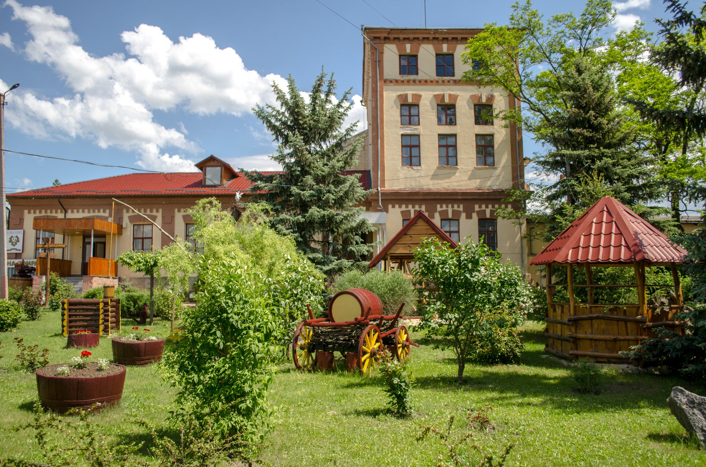

Baş sahıfa
Komrat
Ekskursiya
Kontakt
Русский
Gagauz
Kasabanın görülecek erler
Komrat kasabasında, Galaţan sokaanda orta erindä Komrat devlet universitetinin karşısında karşısında «Şan Aleyası» bulunêr. Kompleks iki paya bölünmüş: sol tarafta politikacılar, saa tarafta kultura işlerindä çalışan insannар.
Klisenin kuruluş tarihinin yılı belli diil. Baa kaynaklar 1820 yılını söleer, öbürleri sä 1840 yılını gösterer. İlk klisä binası taş temel üstündä kuruluydu, kupolun üstündä yapılmış çan kulesi vardı. İlkin kilisä yapıldı, sora çan kulesi kuruldu.
Komrat kasabasının Merkez parkının kurulma tarihinin yılı belli diil. Bilim insannarında bazı temel var sanmaa ki, burda bulunan İoan Predteçi Soboru 1820 yılda kurulmuş, beki da o zamanda Merkez park da kurulmuş.
Komrat kasabasının Merkez parkının kurulma tarihinin yılı belli diil. Bilim insannarında bazı temel var sanmaa ki, burda bulunan İoan Predteçi Soboru 1820 yılda kurulmuş, beki da o zamanda Merkez park da kurulmuş.

«Vinuri de Comrat» — Moldovanın güneyinde, Gagauziya, Komratta bulunan ilk ve en eski şarapçılıktır. Şarapçılık 1897 yılda kuruldu. İlk taş 1895 yılda temele kondu. En eski işletme ve turistik kompleksi Анатолий Хмельницкий yönetir.
Atatürk adına türk bibliotekası. Komratta Mustafa Кemal Аtatürк adını taşıyan Türk bibliotekası 26 İyun 1998 yılda, türk agentlii (TİKA) yardımınan açıldı. Açılış zamanında kiyat fondu 300 adet kiyat sayardı, büün sayısı yakın 8 bin kiyat bulunêr. Bibliotekanın direktoru Vasilişa Tanasoglo. Türk bibliotekasında çok sayıda okuyucu var.
Komratın batı çıkışında, Şevçenko hem Tretyakov sokakları arasında küçük bir parkta, 36-cı muhafız tank briqadası tankistlerinin kahramanlığını anmak için «Tank» Anıtı dikildi. Onlar işgal altındaki şehre onun kurtarılmasından önce ilk girenler oldular.
Afgan savaşına katılmış askerlerge adanmış anıt Komratta 15 Mayıs 1998 yılda açıldı. Onun avtoru ünlü gagauz heykeltıraş Афанасий Кара Чобан’dur. Anıtın dikilmesini önermişler «Afgan Savaşı Gazileri Kurulu» temsilcileridir.
Komrat kasabasında Çernobil NPP kazasında görev yapmış likvidatörlere adanmış bir anıt dikildi. Anıt 03 Mayıs 2019 yılda açıldı. O Pobeda sokaa üzerinde, Komrat kasabasının Kurtuluş Anıtının biraz üstünde yer alır.
Памятник воздвигнут в честь основания города Комрат и расположен в центральном парке.


{kind=link}